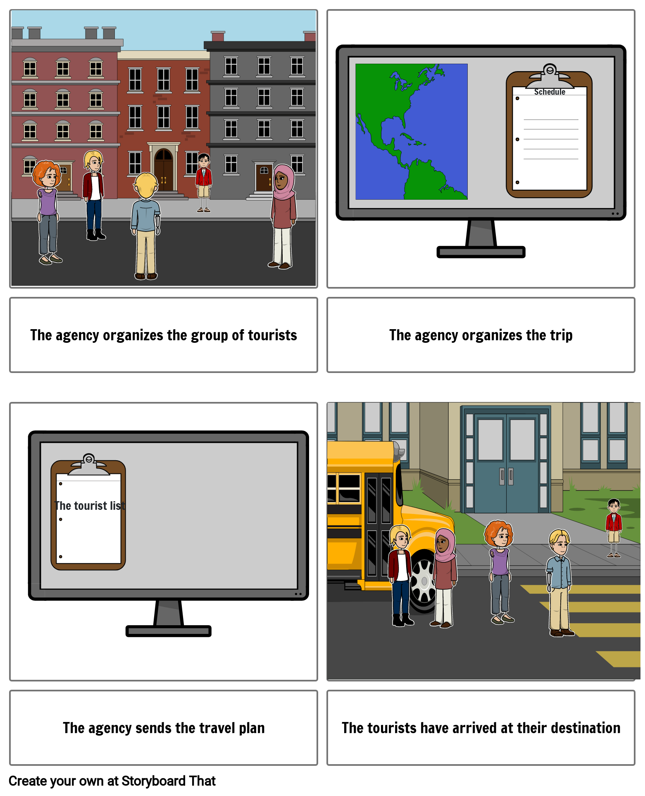
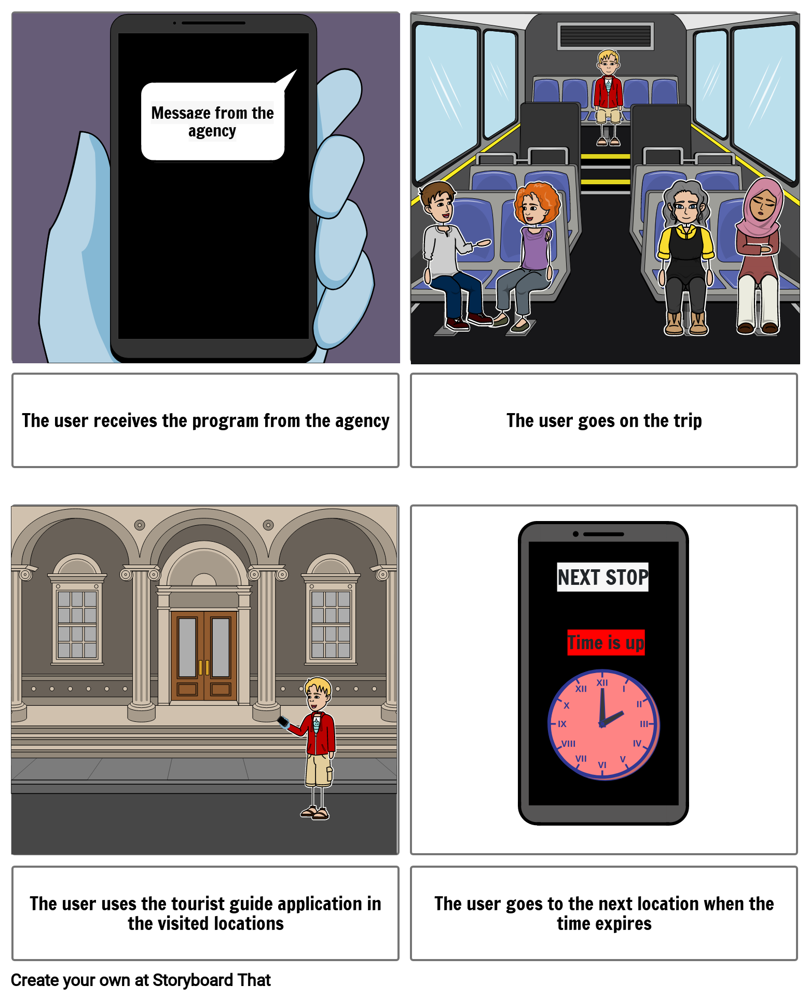

Type: Secondary
Name:
Date of Birth:
Gender: Male
Location: Iasi, Romania
Workplace:
University:
Detailed Description:
Andrei Mihaiu is a 32-year-old male travel coordinator working at TravelVoyage Agency in Iasi, Romania. He completed his education at Facultatea de Geografie si Geologie, which provided him with a solid foundation for his career. Andrei possesses a proficient level of technological expertise and is well-versed in using various travel management platforms, online booking systems, and mobile applications commonly used in the travel industry. He is comfortable with technology and enjoys exploring new tools and applications that can enhance his work efficiency and improve the travel experience for his clients.
Experience with certain products:
Andrei has extensive experience using desktop applications for travel management and trip coordination. He is familiar with software tools commonly used in the travel industry to streamline booking, scheduling, and communication processes.
Dislikes about certain aspects:
Andrei dislikes overly complicated and unintuitive user interfaces that hinder his productivity. He is frustrated by desktop applications that lack responsiveness or suffer from frequent crashes or errors.
Working environment:
Andrei works as a travel coordinator at TravelVoyage Agency, primarily using desktop applications for his daily tasks. He collaborates with tour operators, suppliers, and other stakeholders to organize and manage group trips efficiently.
Social connections:
Andrei maintains professional connections with clients, colleagues, and travel service providers through various communication channels within the desktop application. He values effective and efficient communication to ensure smooth coordination during trip planning and execution.
The user's goals:
Streamlined Trip Planning: Andrei aims to utilize the desktop application to efficiently plan and organize group trips, ensuring all necessary information is readily accessible and easily manageable.
Effective Communication: Andrei wants to leverage the application's communication features to facilitate seamless collaboration and information sharing with clients, colleagues, and group members.
Enhanced Customer Experience: Andrei's goal is to enhance the overall customer experience by utilizing the desktop application's features, such as audio and visual guides, to provide valuable insights into destinations, attractions, and local culture.
Timely Execution: Andrei aims to utilize the application's scheduling and notification features to keep group activities and visits to Points of Interest on track, ensuring a well-paced and enjoyable travel experience.
Practical Goals:
- Efficient Trip Planning: Andrei wants to utilize the desktop application to streamline the process of organizing group trips, saving time and effort in managing logistics, schedules, and bookings.
- Seamless Communication: Andrei aims to use the application's communication features to facilitate quick and effective information sharing with clients, colleagues, and group members, ensuring smooth coordination throughout the trip.
Personal Goals:
- Enhanced Productivity: Andrei desires a desktop application that helps him accomplish tasks efficiently, allowing him to handle multiple trip-related responsibilities effectively.
- Professional Growth: Andrei seeks opportunities to expand his knowledge and expertise in travel coordination through the desktop application, enabling him to provide exceptional service to clients and advance in his career.
Business Goals:
- Customer Satisfaction: Andrei aims to utilize the desktop application to enhance the overall customer experience, ensuring that clients have a seamless and enjoyable trip, leading to positive feedback and repeat business.
- Efficient Operations: Andrei wants to leverage the application's features to streamline internal processes within the travel agency, improving efficiency and productivity in trip planning and execution.
Frustrations and Pain Points
- The user finds the UI cluttered and confusing, with a lack of intuitive navigation and poor visual hierarchy. The interaction design is not user-friendly, leading to frustration and difficulty in performing tasks efficiently.
- he user encounters challenges in completing essential tasks within the product. This may include complex workflows, unclear instructions, or a lack of guidance, making it harder to accomplish tasks efficiently and effectively.
Type: Negative
Name: Maria Popescu
Date of Birth: 25/07/1948
Gender: Female
Location: Suceava, Romania
Workplace: Retired
Financial Situation: Limited income, unable to afford a smartphone
Detailed Description:
Maria Popescu is a retired elderly woman living in Bucharest, Romania. She has always had a deep love for traveling and exploring new places. However, due to her limited income, she struggles to afford modern technology, including a smartphone. Despite her financial constraints, Maria still yearns for a way to access travel information and make the most out of her trips.
Experience with certain products:
Limited experience with modern technology and smartphones. Reliance on traditional methods such as physical maps and guidebooks.
Dislikes about certain aspects:
Financial constraints preventing the purchase of a smartphone. Challenges in accessing updated travel information and real-time updates. Difficulty in staying connected with other travelers and seeking assistance.
Disabilities relevant to our research:
No specific disabilities mentioned in the persona description.
Working environment:
Retirement, no longer actively employed. Limited income affecting purchasing power.
Social connections:
Potential feelings of isolation due to limited access to communication channels. Desire to connect with fellow travelers and share experiences.
The user's goals:
Access travel information, including updated schedules, audio and visual guides, and directions to points of interest. Improve trip planning and navigation. Engage with fellow travelers and seek support. Stay informed and updated about events and changes during trips.
Practical Goals:
- Access updated schedules and directions to points of interest to navigate effectively during trips.
- Obtain reliable and real-time travel information to plan and adjust itineraries.
Personal Goals:
- Enhance the travel experience by exploring new places and enjoying cultural attractions.
- Connect with fellow travelers, share experiences, and foster a sense of community.
- Overcome the limitations of financial constraints and enjoy fulfilling trips within available means.
Frustrations and Pain Points
- Challenges in navigating the user interface due to limited technological knowledge. Difficulty understanding and using the features of the application. Lack of familiarity with modern technology interfaces.
- Inability to afford a smartphone, preventing access to the mobile application. Dependence on traditional methods of obtaining travel information. Frustration with the limitations imposed by financial constraints.
Type: Served
Name: Andrei Popescu
Date of Birth: 15/12/1988
Gender: Male
Location: Bucharest, Romania
Workplace: Local Tourist Guide
University: N/A
Detailed Description:
Andrei Popescu is an experienced local tourist guide based in Bucharest. He has been working in the tourism industry for over 10 years and is well-versed in the city's history, culture, and landmarks. Andrei is passionate about showcasing the best of Bucharest to visitors and providing them with an unforgettable experience.
Experience with certain products:
Extensive experience as a local tourist guide, familiar with traditional tour guide methods and practices. Limited experience with using mobile applications for tourist guidance.
Dislikes about certain aspects:
Apprehension towards new technologies and concerns about their impact on the tour guide profession. Frustration with the application potentially replacing human interaction and personalized guidance. Challenges in integrating the application into the existing tour guide workflow.
Working environment:
Works as a local tourist guide in Bucharest, conducting tours and providing information to tourists. Familiarity with the city's history, culture, and landmarks. Engages in on-site interactions and conducts walking tours.
Social connections:
Well-connected within the local tourism industry. Interacts with other tour guides, travel agencies, and tourists.
The user's goals:
Enhance tour guide services by effectively utilizing the features of the application. Seamlessly integrate the application into the existing tour guide workflow. Provide a personalized and engaging experience for tourists while incorporating technology. Maintain a strong reputation as a knowledgeable and reliable local tourist guide.
Practical Goals:
- Efficiently provide accurate and up-to-date information to tourists using the application.
- Streamline tour guide operations by utilizing the features of the application for scheduling and organizing tours.
- Improve time management and productivity through the use of timers and alarms for each location.
Personal Goals:
- Enhance personal knowledge and expertise by leveraging the application's audio and visual guides.
- Adapt to new technologies and expand digital literacy skills.
- Maintain a strong passion for showcasing the best of Bucharest to visitors.
Business Goals:
- Enhance the overall tourist experience by incorporating the application's features into the tour guide services.
- Attract and retain more tourists by offering a unique and technology-enhanced tour experience.
- Increase positive reviews and recommendations, leading to growth in the local tourism industry.
Frustrations and Pain Points
- Andrei may have concerns about the application replacing the need for human interaction and personalized guidance, as he values the personal connection with tourists.
Interaction design patterns:
Regarding the desktop application, the agency, the main page from where we can select the menu, the map, the contact and the settings.
By a simple click on the menu we access the page where we have the options:
- Home - which returns to the main page
- Make trip - create a new trip
- Send to Users - send trip details to users
- Settings - access the settings
By clicking on the "Make a trip" button we access the page where we select the city and we type in the details about the trip such as the attractions, the departure hour and the arrival hour.
For the attraction, deprture hour and the arrival hour we simply type in the hour.
When all the details are established, we send these details about the trip further to the users.
Regarding the mobile application, we have the main page from where we can select the menu, the chat, the available trips, the schedule and the ongoing trip.
By clicking on the "Chat" button we access the chat page where we can talk to other users or the driver.
The "Available trips" page is where the user select the trip that he wants. By clicking on the trip he can see the schedule, the map and can decide if he want to select it or not. By clicking on the map the user is redirected to the map that he can see by dragging it.
The "Trip schedule" page is the extended program for the users.
The "Ongoing trip" button redirects the user to Mike, his personal guide who tells him useful and interesting things about the visited place but also counts the timer and the time when he has to go to the next tourist attraction. Here we have used an animation with pre-set messages, but they cannot be modified by clicking, nor can you communicate with the "guide" Mike to ask him things.
The "Home" button is present on each page precisely to make it easy for the user to return to the main page any time.
The "Menu" show details about the logged in user and has also the option to change the settings.
Here are the storyboards based on which the two platforms were designed.
 And also the user flows.


Affective factors and emotions.
Emotion is a reaction to events deemed relevant to the needs, goals, or concerns of an user.
Keeping a user happy may, therefore, not only affect satisfaction, but may also lead to efficiency and creativity. To stimulate emotions, products must have attributed a personality based on appearance and interaction means.
That is precisely why the mobile version is very easy to use, interfaces directly address the basic needs of a certain user. It also benefits from a pleasant visual experience, the pages being colorful ,also like the map. In addition to the predominant colors, on the visual side we also use icons that are suggestive of actions.
Affective computing in Human-Computer Interaction involves developing technologies that can recognize, interpret, and respond to human emotions in order to enhance the user's experience and improve the effectiveness of the interaction. The goal of affective computing in HCI is to create computer systems that can understand and adapt to human emotions, leading to more personalized and engaging user experiences.
Here are some techniques and technologies used in affective computing:
- Emotion recognition:sensor bracelet
- Emotion modeling
- Emotion expression:animated avatars, voice modulation
- Emotion-driven adaptation: providing calming music when detecting signs of stress, for example when reaching a difficult level of a game
To create emotion and a more relaxed space we have Mike, the personal guide.
Its mission is to tell the user interesting information about the tourist sights visited, but also to keep track of the time spent at a location, informing the user when it is time to leave for the next location.
Even if it is not made in such a way as to answer questions, the interactive guide is a method of bringing emotion through the simple animation itself and through the messages transmitted which do not necessarily only have an educational role but also a fun role to learn new information.